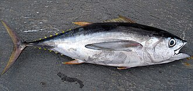

めばち（目撥）の漁獲量 都道府県ランキング
全21県の順位と、とれた量
めばちが日本でいちばん多くとれるのは宮城県です。5,676 tで、全国（2万9,021 t）の20%を占めます。

| 順位 | 都道府県 | 漁獲量 | 全国に占める割合 |
|---|---|---|---|
| 1位 | 宮城県 | 5,676 t | 20% |
| 2位 | 高知県 | 3,650 t | 13% |
| 3位 | 静岡県 | 3,233 t | 11% |
| 4位 | 神奈川県 | 1,986 t | 6.8% |
| 5位 | 鹿児島県 | 1,974 t | 6.8% |
| 6位 | 岩手県 | 1,796 t | 6.2% |
| 7位 | 青森県 | 1,744 t | 6.0% |
| 8位 | 三重県 | 1,722 t | 5.9% |
| 9位 | 宮崎県 | 1,688 t | 5.8% |
| 10位 | 沖縄県 | 1,456 t | 5.0% |
| 11位 | 富山県 | 1,404 t | 4.8% |
| 12位 | 福島県 | 1,136 t | 3.9% |
| 13位 | 東京都 | 526 t | 1.8% |
| 14位 | 茨城県 | 248 t | 0.9% |
| 15位 | 和歌山県 | 181 t | 0.6% |
| 16位 | 大分県 | 174 t | 0.6% |
| 17位 | 徳島県 | 77 t | 0.3% |
| 18位 | 千葉県 | 32 t | 0.1% |
| 19位 | 島根県 | 27 t | 0.1% |
| 20位 | 愛媛県 | 7 t | 0.0% |
| 21位 | 北海道 | 3 t | 0.0% |
めばちの漁獲量の推移（令和2年〜令和6年）
全国の漁獲量は、令和2年の3万2,157 tから令和6年の2万9,021 tへ、10%減りました。この間、1位はずっと宮城県です。
| 年 | 全国 | 1位 | 2位 | 3位 |
|---|---|---|---|---|
| 令和6年 | 2万9,021 t | 宮城県5,676 t | 高知県3,650 t | 静岡県3,233 t |
| 令和5年 | 2万8,372 t | 宮城県5,036 t | 静岡県3,587 t | 高知県3,526 t |
| 令和4年 | 2万5,831 t | 宮城県5,363 t | 高知県2,947 t | 鹿児島県2,406 t |
| 令和3年 | 3万1,513 t | 宮城県5,721 t | 静岡県4,150 t | 鹿児島県3,316 t |
| 令和2年 | 3万2,157 t | 宮城県6,635 t | 高知県3,532 t | 神奈川県2,501 t |
この数字について
- 分類：鮪の仲間
- 全国の漁獲量：2万9,021 t
- この数字が表すもの：漁獲量（海でとった重さ。養殖は含みません）
- 調査：海面漁業生産統計調査（海面漁業） 令和6年
- 21県分を調査（調査していない県は順位に入りません）
めばちの漁獲量について、よくある質問
- めばちの漁獲量が日本一の都道府県はどこですか？
- 宮城県です。海面漁業生産統計調査（海面漁業）（令和6年）で5,676 tでした。
- めばちの漁獲量ランキング2位・3位はどこですか？
- 2位は高知県（3,650 t）、3位は静岡県（3,233 t）です。
- めばちの漁獲量ランキング4位・5位はどこですか？
- 4位は神奈川県（1,986 t）、5位は鹿児島県（1,974 t）です。めばちの全21県の順位は上の表のとおりです。
- めばちの全国の漁獲量はどれくらいですか？
- 2万9,021 t（令和6年）です。